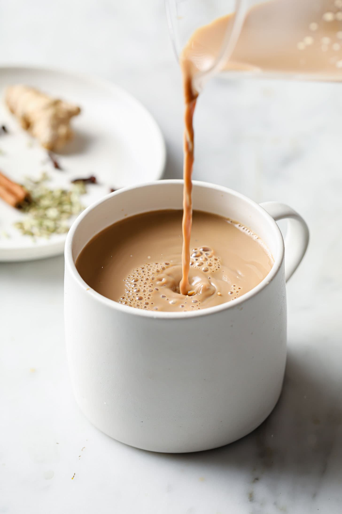

Masala Chai

Description
Ingredients
- 1(1/2) cups water
- 1(1/2) inch piece fresh ginger, chopped
- 4 whole cloves
- 1/2 cinnamon stick
- 5 pods green cardamom pods, crushed
- 5 pods black cardamom pods, crushed
- 2 black tea bags
- 2/3 cup milk
- 2 tablespoons white sugar
Steps
- Bring water to boil in a small pot.
- Add ginger, cloves, cinnamon stick, green cardamom, and black cardamom.
- Simmer until flavours infuse, about 5 minutes.
- Add tea bags.
- Simmer for 1 to 2 minutes.
- Add milk and Sugar.
- Strain tea into mugs.